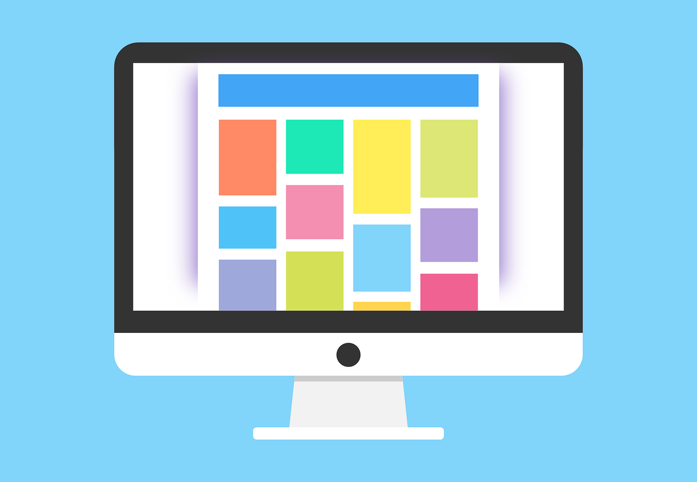
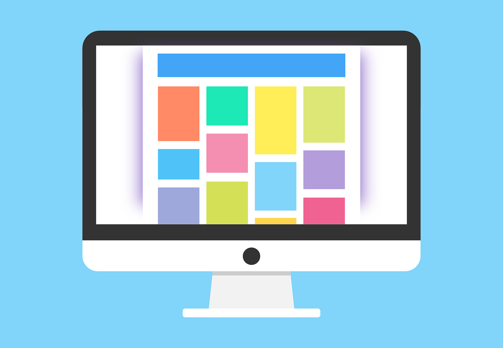

Welcome!
Hello and welcome to my web developer portfolio!
I'm thrilled to have you here. This space is a reflection of my passion for crafting exceptional web experiences. As you navigate through these pages, you'll discover a collection of my projects, each representing a journey of creativity, problem-solving, and innovation.
My approach to web development is rooted in a commitment to creating not just websites, but digital solutions that resonate with users. From responsive designs to seamless functionality, I strive to blend aesthetics with functionality to deliver a compelling user experience.
Feel free to explore my projects and delve into the code behind them. I believe in the power of collaboration and continuous learning, so I'm always open to feedback and new ideas. If you have any questions or if there's a project you'd like to discuss, don't hesitate to reach out. Let's create something amazing together!
Thank you for visiting, and I hope you enjoy the journey through my digital endeavors.
Best regards,
Some recent projects:
 

Welcome to the showcase of my recent web development endeavors.
Here, you'll find a curated collection of projects that encapsulate
my skills, creativity, and dedication to delivering innovative digital
solutions. Dive into the world of coding, design, and functionality
as you browse through these recent ventures.
Each project is a testament to my passion for crafting seamless, user-centric
experiences. Feel free to explore and get a glimpse of the
diverse range of challenges I've tackled and the solutions
I've crafted.